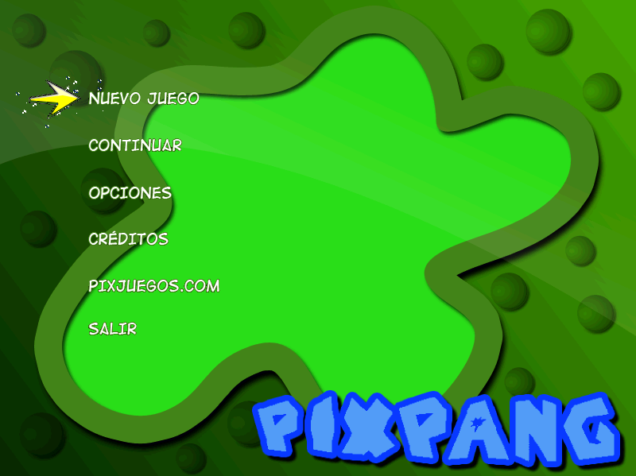
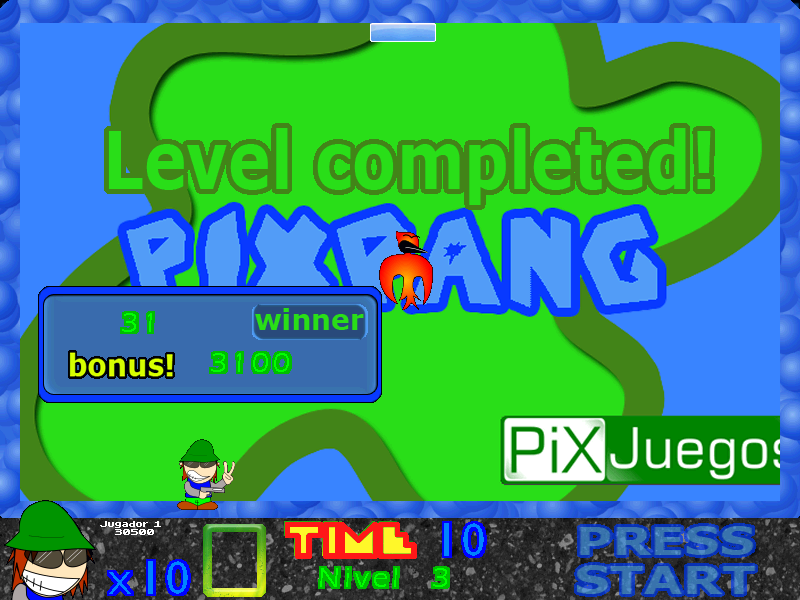

PiX Pang: 2.1 (2010)
Esta es la anteúltima versión de PiX Pang. A diferencia de la 2.1 que todos conocemos, esta versión fue compilada en el año 2010 y en Fénix 0.93.
La versión carece de fondos y el menú está en español (en la 2.1 actual está en inglés), lo más probable es que fue compilado por error.
Esta versión no funciona en Windows 11. También presenta varios bugs visuales, entre ellos, que al perder, la pantalla negra está mal posicionada.

Menú

Ingame
Curiosidades:
- En esta versión se puede elegir el idioma del juego. (Sospecho que en la 2.1 actual también se puede hacer, solo que ya está configurado en inglés desde su instalación)
- A diferencia de la 2.1 actual, este viene en un instalador, por lo que es mas fácil explorar los contenidos. Además, tiene la jugabilidad de la 2.0.